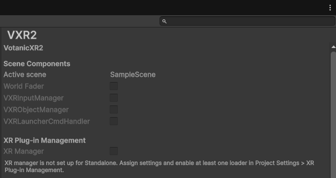
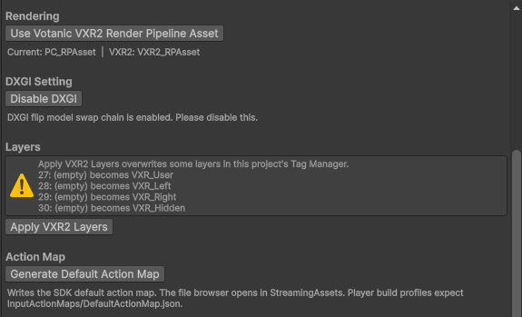
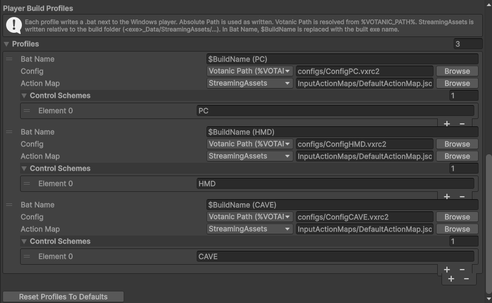

Warning
TODO:
- Decide where to put this page
- Finalize the content of this page
Project setting
Use the VXR2 Project Setting page to define settings for your project.
To open the VXR2 Project Setting page, navigate to the top menu in the Unity Editor, then select Edit > Project Settings and go to Votanic > VXR2 category.



| Section | Description |
|---|---|
| Scene Components | A checklist for scene components. |
| XR Plug-in Management | A checklist for XR manager plugin. |
| Rendering | Choose Use Votanic VXR2 Render Pipeline Asset to apply the VXR2 render pipeline asset. |
| DXGI Setting | Choose Disable DXGI to disable DXGI. |
| Layers | Choose Apply VXR2 Layers to apply layers. |
| Action Map | Choose Generate Default Action Map to generate the default action map file. |
| Player Build Profiles | Set the properties of VXR2 build profiles. To reset the profile properties to default values, choose Reset Profiles To Defaults. - Bat Name: Name of the .bat file- Config: Path of the config. Choose Browse to pick the file path through file explorer. - Action Map: Path of the action map. Choose Browse to pick the file path through file explorer. - Control Schemes: Control scheme used for this .bat file |